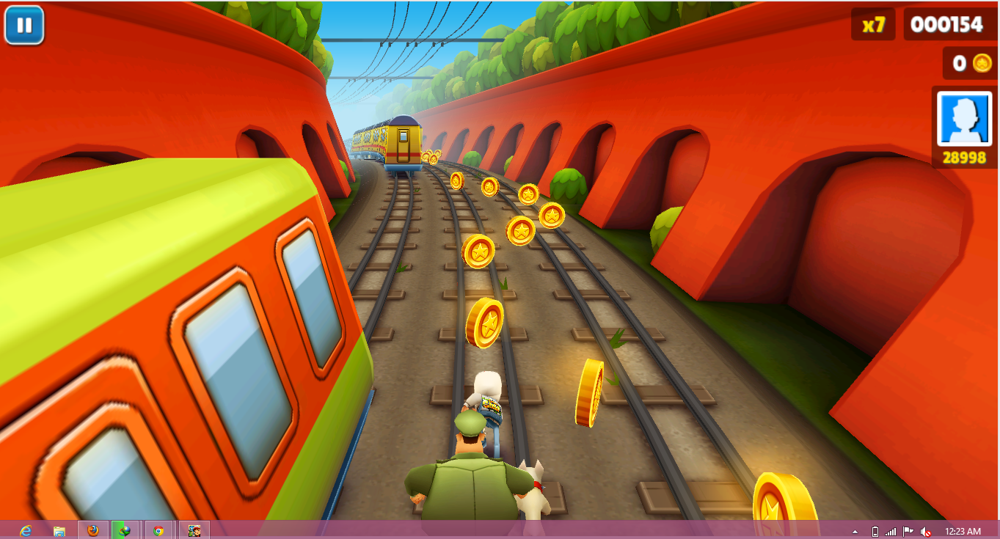

Wir, das Team hinter No Game No Glide, hatten die Idee, für das Google Cardboard ein Remake vom Mobilspiel "Subway Surfers" zu kreieren. Doch wie kommt man auf solch eine Idee? 
Screenshot von Subway Surfers
Urspüglich wollten wir eine interaktive Karte der Stadt Hamburg machen, jedoch kam irgendwann der Gedanke des Spieles in den Sinn. So kam man relativ Schnell auf das Vorbild von Subway Surfers, wo man durch die U-Bahnen diverser Städte vor einem Gesetzeshüter flüchtet. Dies wollte man auf die Stadt Hamburg übertragen, da dies jedoch zu kompliziert wurden haben wir uns auf das Allgemeine Konzept von dem Vorbild entschieden.
Ein Teil des Teames mag den Anime No Game No Life (der Name zeigt schon starke Ähnlichkeit). In diesem geht es um die beiden Hikkikomori(von der Gesellschaft abgekapselt)-Geschwister Schiro und Sora, dessen Leben quasi auf Spielen basiert. Würden sie nichtmehr spielen können, so wären sie im übertragenden Sinne tot. Dort ziehen wir eine Analogie zum unseren Spiel da der Spieler andauernd Weg rennen muss, sonst erlebt man einen Game Over.
Natürlich steht einem Entwicklerteam sehr viele Entwicklungsumgebungen zur Verfügung, jedoch entschieden wir uns relativ schnell für Unity, weil dieses sich sehr einfach für die Entwicklung von Android-Spielen ist. Zusatzlich mussten wir auch das Android-SDK zur compilierung des Projektes installieren. Alles frei verfügbare Tools. Was der Hintergrundmusik betrifft, so hatte ein Mitarbeiter des Entwicklungsteams eine sehr breite Auswahl an Musik und hat sich letzendlich für 15 Tracks entschieden, welche entweder für freien Nutzen vom Autor freigeben wurde oder die Lizenz es erlaubt den Track zu benutzen.
Shinesparkers - Slipstream, frei erhältlich aus dem "Harmony of a Hunter 101% Run" Album
Der Soundtrack ist unter diesem Link als 7z-Datei herunterzuladen.Wie einigen bekannt ist, ist Virtual Reality gerade stark im Anmarsch mit der Oculus Rift und der HTC Vive. Google liefert dort auch für das Android Betriebssystem die Cardboard-API auf dem Weg. Jedoch sind die bisherigen Apps zu dieser API langweilig und wenig interaktiv. Unser Weg somit den Einstieg in die VR-Welt zu vereinfachen und somit auch die 'reale Welt' zu verbessern, ist somit eine Einfache, lustige und interaktive App zu kreieren. Ein kleiner Seiteneffekt ist auch das damit auch sehr schnell die Langeweile vertrieben wird.